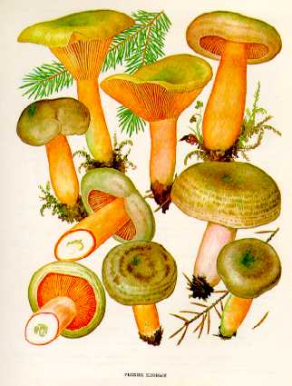

1.СЕРУШКА. СЕРУХА. ПОДОРЕШНИК. ПОДОРОЖНИЦА
Растет с июля до поздней осени, чаще всего в березняках или осинни-ках, на супесчаных или суглинистых почвах, в сыроватых местах. Встречается группами.
Шляпка его сравнительно небольшая, до 10 см в диаметре, у молодого гриба выпуклая, потом воронковидная, с неровными волнистыми краями, серовато-фиолетового цвета со свинцовым оттенком, с заметными темными концентрическими зонами. Мякоть белая, плотная. Млечный сок водянистого или белого цвета, не изменяющийся на воздухе.
Пластинки нисходящие по ножке, сравнительно редкие, толстоватые, бледно-желтоватые. Споры желтоватые.
Ножка длиной до 8 см, толщиной до 2 см, светло-сероватая, иногда вздутая, сначала плотная, потом полая.
Условно съедобен, третьей категории.Используется только для соления.
2.КРАСНУШКА
Встречается в лиственных и хвойных лесах, чаще на мшистых местах, в июле - октябре, иногда большими группами.
Шляпка небольшая, до 8 см в диаметре, сначала (у молодого гриба) плоско-выпуклая с загнутыми вниз краями, потом воронковидная, часто с бугорком посредине, красно-бурая или желтовато-бурая, сухая, тонкомясая. Мякоть буровато-желтоватая. Млечный сок вначале белый, на воздухе становится водянисто-белым, у молодых грибов неедкий, у старых - горький и едкий.
Пластинки приросшие или слегка нисходящие на ножку, желтоватые или чуть розоватые, потом красноватые, частые. Споровый порошок белый.
Ножка до 6 см длины, до 1,5 см толщины, ровная, одного цвета со шляпкой или чуть светлее
ее, иногда мучнистая.
Условно съедобен, четвертой категории. Пригоден для соления после отваривания.
3.ГОРЬКУШКА. ГРУЗДЬ ГОРЬКИЙ
Растет на лесной подстилке в различных лесонасаждениях: сосняках, ельниках с березой, в лиственных лесах с подлеском из лещины. Встречается одиночно и небольшими группами с июня по октябрь.
Шляпка до 8 см в диаметре, сначала плоско-выпуклая, потом воронковидная, с выступающим бугорком или сосочком в центре, сухая, голая, красновато-коричневая. Мякоть довольно плотная, сначала беловатая, потом становится палевой. Млечный сок водянисто-белый, со слабым запахом древесины, на воздухе не изменяется.
Пластинки нисходящие по ножке, у молодых грибов бледно-красновато-желтые, потом становятся бурыми, с беловатым налетом. Споровый порошок белый.
Ножка длинная, до 8 см, толщиной 1-1,5 см, одного цвета со шляпкой или чуть светлее ее, сначала сплошная, потом полая, при основании пушисто-волокнистая.
Гриб условно съедобен, четвертой категории. После отваривания пригоден для
соления. Молодые грибы можно мариновать.